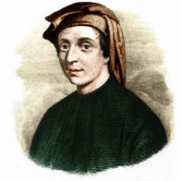

Daftar Isi
- Beranda
- Pythagoras
- Euclid
- Archimdes
- Leonardo Fibonacci
- Isaac Newton
- Leonhard Euler
- Carl Friedrich Gauss
- Georg Cantor
- Alan Turing
Hubungi Admin


JAM
lainnya
10 tokoh berpengaruh dalam matematika
Siapa itu Leonardo dari pisa?

Sejarah Hidup:
Leonardo dari Pisa, yang lebih dikenal sebagai Fibonacci (skt. 1170–1240), adalah seorang matematikawan Italia yang terkenal karena mempopulerkan sistem angka Hindu-Arab di Eropa dan memberikan kontribusi besar dalam pengenalan deret Fibonacci. Dia lahir di Pisa, Italia, dan melakukan perjalanan luas yang membawanya ke berbagai belahan dunia, termasuk Afrika Utara dan Timur Tengah.
Pemikiran:
Salah satu pemikiran utama Fibonacci adalah pengenalan sistem angka Hindu-Arab (0-9) di Eropa Barat melalui bukunya "Liber Abaci" (Buku Hitungan) pada tahun 1202. Sebelumnya, sistem angka Romawi yang kurang efisien digunakan di Eropa. Pengenalan sistem angka Hindu-Arab memiliki dampak besar pada perdagangan, ilmu pengetahuan, dan matematika di Eropa.
Karya:
Salah satu kontribusi paling terkenal Fibonacci adalah deret angka yang dinamainya sebagai "deret Fibonacci." Deret ini dimulai dengan angka 0 dan 1, dan setiap angka berikutnya adalah hasil penjumlahan dua angka sebelumnya dalam deret. Deret ini menjadi dasar untuk berbagai pola dalam matematika, seperti rasio emas (golden ratio) yang sangat terkenal.
Pengaruh dalam Matematika:
Deret Fibonacci memiliki banyak aplikasi dalam matematika dan ilmu pengetahuan. Salah satu aspek yang paling terkenal adalah rasio emas (golden ratio), yang didefinisikan sebagai batas rasio dua angka berurutan dalam deret Fibonacci saat deret ini mendekati tak hingga. Rasio emas memiliki sifat-sifat yang menarik dan sering ditemukan dalam seni, arsitektur, dan bahkan dalam struktur alami seperti bentuk bunga.
Selain itu, deret Fibonacci memiliki keterkaitan dengan berbagai bidang matematika seperti teori bilangan, kombinatorika, dan aljabar. Deret ini juga ditemukan dalam ilmu komputer dan ilmu keuangan.
Pengenalan sistem angka Hindu-Arab juga membantu memperluas penggunaan matematika dalam perdagangan dan ilmu pengetahuan di Eropa. Kontribusi Fibonacci memberikan dorongan penting dalam mengembangkan konsep matematika modern di Barat dan memperluas penggunaan matematika dalam berbagai konteks praktis.
Secara keseluruhan, Fibonacci memainkan peran penting dalam mengantar Eropa ke era penggunaan sistem angka Hindu-Arab yang lebih efisien dan mengenalkan konsep deret Fibonacci yang memiliki dampak dalam banyak aspek matematika dan ilmu pengetahuan.